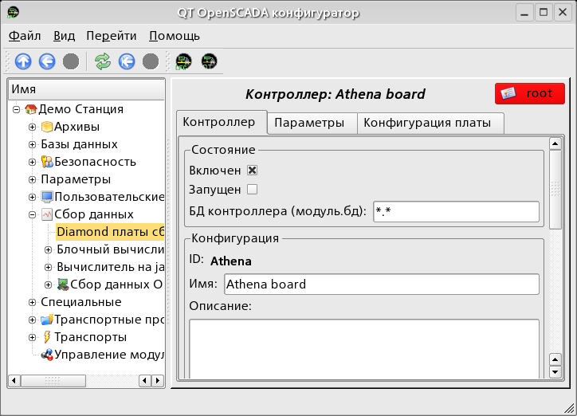
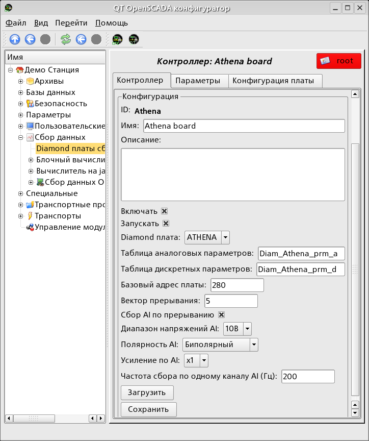

Предоставляет доступ к платам сбора данных от Diamond Systems. Включает поддержку системной платы Athena.
Лицензия:
GPL
Введение
Модуль предоставляет в систему OpenSCADA поддержку источников
динамических данных основанных на платах сбора данных фирмы
Diamond Systems (http://diamondsystems.com/).
Модуль построен на основе универсального драйвера производителя
плат. Универсальный драйвер доступен практически для всей
известных программных платформ в виде библиотеки. Универсальных
драйвер был получен по адресу http://www.diamondsystems.com/support/software.
Драйвер был включен в дистрибутив системы OpenSCADA, поэтому
для сборки данного модуле не требуются внешние библиотеки.
Платы сбора данных фирмы Diamond Systems представляют из себя
модули расширения формата PC/104. Платы могут содержать: аналоговые
IO(входы/выходы), дискретные IO и счётчики. Комплектация плат
может значительно варьироваться. Могут содержаться только
IO одного типа или же всё по немногу. Кроме того,
функцией сбора данных могут наделяться и системные платы этой
фирмы. Например, системная плата Athena содержит: 16 AI, 4 AO, 24 DIO.
Модуль предоставляет поддержку аналоговых и дискретных IO. Сбор
аналоговых входов (AI) поддерживается в двух режимах: прямого
сбора и сбора по прерыванию. Метод сбора по прерыванию
позволяет достичь максимальной частоты опроса поддерживаемой
аппаратурой. В случае с процессорной платой Athena
эта частота достигает 100 кГц. В процессе сбора
по прерыванию данные получаются секундными кадрами
и помещаются в буфера архивов значений.
В случае опроса аналоговых каналов по прерыванию настроить
индивидуально каждый канал нельзя. Такая возможность предоставляется
только при прямом опросе.
Дискретные каналы, обычно, являются двунаправленными
и группируются по 8 каналов. Каждой группе каналов можно
назначить свой режим входа или выхода. Модуль предоставляет
возможность конфигурировать группы дискретных параметров.
1 Контроллер данных плат фирмы Diamond
Плата фирмы Diamond Systems конфигурируется путем создания контроллера
в системе OpenSCADA и его конфигурации. Пример вкладки
конфигурации контроллера платы приведен на рис.1 и рис.2.

Рис.1. Вкладка конфигурации контроллера/платы фирмы Diamond Systems (1).

Рис.2. Вкладка конфигурации контроллера/платы фирмы Diamond Systems (2).
С помощью этой формы можно установить:
Состояние контроллера(платы), а именно: «Включен», «Запущен» и имя БД содержащей конфигурацию.
Идентификатор, имя и описание контроллера(платы).
Состояние в которое переводить контроллер при загрузке: «Включен» и «Запущен».
Тип платы фирмы Diamond Systems.
Имена таблиц для хранения конфигурации аналоговых и дискретных параметров контроллера.
Базовый адрес и аппаратное прерывание платы.
Признак сбора аналоговых входов по прерыванию и частоту сбора данных.
Общую конфигурацию преобразователя аналоговых входов
в составе: диапазона входных напряжений, полярности
и усиления каналов.
Сохранить/загрузить контроллер в БД.
В режиме прямого опроса аналоговых входов: аппаратное
прерывание платы, частота опроса аналоговых входов и усиление
аналогового преобразователя недоступны.
Для конфигурации портов цифровых входов/выходов на странице
контроллера содержится вкладка их конфигурации (рис.3).
Модулем предоставляется информация о двух типах параметров:
цифровом и аналоговом. Каждый тип параметра хранится
в отдельной БД и как следствие содержит собственную
вкладку конфигурации. Вкладка конфигурации аналоговых параметров
представлена на рис.4 и рис.5. Вкладка конфигурации цифровых
параметров представлена на рис.6.
 http://diamondsystems.com/).
Модуль построен на основе универсального драйвера производителя
плат. Универсальный драйвер доступен практически для всей
известных программных платформ в виде библиотеки. Универсальных
драйвер был получен по адресу
http://diamondsystems.com/).
Модуль построен на основе универсального драйвера производителя
плат. Универсальный драйвер доступен практически для всей
известных программных платформ в виде библиотеки. Универсальных
драйвер был получен по адресу